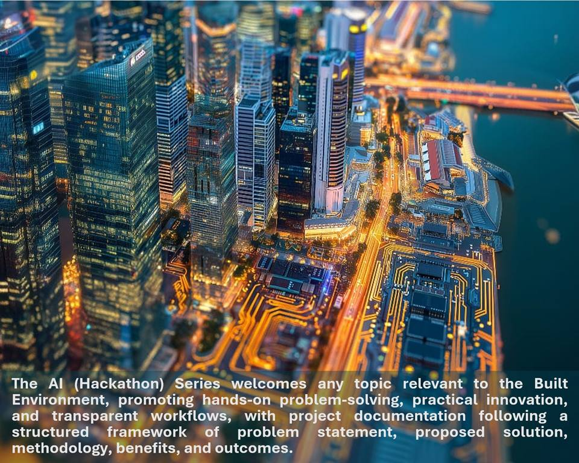

Ground-up solutions by practitioners, for practitioners
Note: Registered participants can access past use cases and AI resources. Content, dates, and terms may be updated by the organisers.
About
The AI (Hackathon) Series is a community-driven initiative led by the Young Architects League (YAL) of the Singapore Institute of Architects (SIA). This year, YAL is collaborating with the SIA Digital Technology Committee (DTC) and Internationalisation Committee, along with partners, to upskill young architects and built environment professionals in practical AI and digital tools.
Through hybrid workshops, group discussions, and hands-on sprints, participants address real-world challenges such as design automation, regulatory checks, site supervision, and self-proposed topics.
The series promotes open sharing and fosters a growing Community of Practice to advance AI and digital technology innovation in the built environment.

2026 AI Challenge
Objectives
- Upskill local and international young Architects, practitioners and firms in using AI and digital technologies to develop practical data-driven solutions that enhance creativity and productivity.
- Foster knowledge-sharing, innovation and collaboration within the Architecture and Built Environment community through ground-up initiatives.
Target outcomes
Enable participants to collaboratively learn, develop, and share AI-assisted approaches and applications, creating practical and innovative solutions together with the community of practice (CoPr).
This approach fosters collective initiatives and promotes scalable, collaborative outcomes, enabling participants to learn and build simultaneously.
All online sessions will be recorded and shared within the CoPr as learning resources. ArchiFest 2026 will showcase top entries.
Theme
Collaborate and Innovate: Our AI Collaboration
Topics
Open to practical topics, for example:
- Design: Optimise and rank options using user-defined KPIs; generate a summary report.
- Checks: Compliance Check drawings/models and produce an evidence-based compliance report.
- Manage: Track issues/RFIs/actions and generate status dashboards and reports.
- Contract: Manage RVOs/variations/claims and generate evidence-linked reports.
- Fabrication: Extract quantities/shop-drawing checks and generate fabrication-ready reports.
- Construction & O&M: Auto-generate site inspection reports from checklists, photos, and notes.
- Others: Add your niche use case (e.g., sustainability, safety, or asset data validation)
Target participants
Local and/or international young architects, practitioners, firms, and tech partners looking to enter the built environment can participate as individuals or self-formed groups.
Judging criteria
- Practicality & Impact (30%) – A well-defined problem statement with a feasible scope and an effective solution that addresses real-world needs. Include measurable KPIs (e.g., time, cost, quality, risk, or manual effort), with a baseline comparison.
- Collaboration & Innovation (30%) – Local and/or international collaboration demonstrating innovative use of AI-driven agentic workflows that integrate with existing systems and processes to streamline work and improve outcomes.
- Documentation & Implementation (40%) – Clear documentation of methods, tools, and process, including links to code repositories or equivalent artefacts, with sufficient implementation details and results to show problem, approach, and outcomes.
Cash prizes (to be confirmed)
- First Prize: $3,000 (1)
- Second Prize: $2,000 (1)
- Third Prize: $1,000 (1)
- Innovation Awards: $500 (5)
Speakers & assessment panel
Speakers
Ar William LAU (LinkedIn)
Principal at William Lau Architects
As Principal at William Lau Architects, I bring over 40 years of experience leading architectural projects. I hold a Master's degree in Project Management from the National University of Singapore and a Bachelor's degree in Architecture from the University of Singapore. My expertise includes architecture, construction management, and technology integration, with a strong commitment to innovative and sustainable design for clients and the community.
Samuel OOI (LinkedIn)
BIM Associate, Kyoob Architects
Sam is an architectural BIM Specialist based in Singapore with 3 years' experience across Malaysia, Singapore, and Hong Kong, focused on high-rise residential projects. I specialise in BIM management, coordination, and modelling, and I'm actively exploring automation, programming, and computational workflows to build better tools for future architects.
Jason LI (LinkedIn)
Associate Director, DIST, M.Moser
Jason Li is an Associate Director at M Moser Associates, leading the global DIST and GAIA groups. He focuses on applying AI and technology to interior design and architectural practice, with an emphasis on sustainability and wellness. With 9+ years at M Moser, he is WELL Faculty and a LEED AP (ID+C, O+M), WELL AP, RESET AP, Trimble Visiting Professional, and BCA Green Mark AP, and has received awards including the buildingSMART China National BIM Contest.
Dr Bernard LEONG (LinkedIn)
CEO and Co-founder, Dorje AI
Bernard Leong is the founder/CEO of Dorje AI and an adjunct educator with NUS Business School / NUS-ISS. Formerly the Group CDIO at Woh Hup (construction), he focuses on agentic AI workflow automation, secure, customer-cloud deployments, multi-agent orchestration, and approval-driven document/finance processes.
Keith LIM (LinkedIn)
Enterprise Consultant, Canonical
Keith Lim is a tech advisor at Handdi.io, based in Singapore. An SMU Economics and Quantitative Finance graduate (Cum Laude), he blends finance, data science, and AI, with experience in trading, research, and building Python automation tools. He is also exploring agentic AI workflows—multi-step AI agents that plan, call tools, and automate real tasks from data extraction to decision-ready reports.
Claurence LEE (LinkedIn)
AI Engineer, BCA
Boasting a solid foundation in statistics, Claurence transitioned into the tech field with 3 years of experience as a Data Engineer and data analysis, followed by years of innovative work in Artificial Intelligence. This unique blend of analytical rigor and technical expertise enables me to tackle complex data challenges and drive AI advancements.
Ar PAN Yi Cheng (LinkedIn)
Founder of Type 0 Architects
Ar Pan integrates computational techniques to create innovative, technology-driven spaces. With globally recognized projects, his work redefines design through a multidisciplinary approach, blending craftsmanship, digital precision, and material experimentation.
Assessment Panel
- Ms Adeline LOO – BCA Construction Productivity and Quality Group Director
- Ar William Lau TY – SIA Digital Technology Committee Chair, William Lau Architects Founder
- Assist. Prof. Immanuel Koh – SUTD Assistant Professor, CAADRIA 2024 Chair
Sponsors & supporters
Influential Sponsors & Supporting Sponsors: To be confirmed and updated.
Benefits
- Problem-Solving: Explore AI-assisted strategies to solve practical issues within a self-defined time
- Upskilling: Learn AI with a community of practice at a self-driven pace
- Networking: Connect with industry leaders and peers through the event
- Recognition: Celebrate top projects with prizes at ArchiFest 2026 in July
- Certification: Earn e-certification upon completion
Timeline
Key Dates
- 21 Jan: Interest Registration and Topic Survey
- 11 Feb: Announcement in website
- 25 Feb: Discussion and Sharing, 7:00pm - 8:30pm*
- 11 Mar: Discussion and Sharing, 7:00pm - 8:30pm*
- 18 Mar: 11:59pm Problem Statement Submission
- 25 Mar: Discussion and Sharing, 7:15pm - 8:30pm*
- 8 Apr: Discussion and Sharing*
- 15 Apr: 11:59pm Solution Submission
- 22 Apr: Discussion and Sharing, 7:15pm - 8:30pm*
- 6 May: Discussion and Sharing, 7:15pm - 8:30pm*
- 13 May: 11:59pm Final Submission
- 20 May: Presentation and Assessment, 6:30pm - 9:30pm*
- 24 Jul: Forum & Ceremony at ArchiFest 2026
*Hybrid setup. Please register to attend (free). Registered participants can login to view the sharing session details and access past winning AI use cases and resources.
Venue & Access
SIA Theatrette
3rd Level, 79 Neil Road, Singapore 088904
BOA-SIA CPD points
- 3 sessions: 1 point
- 5 sessions: 2 points
- 7/8 sessions: 3 points
CPD points are awarded upon recorded attendance at sessions listed above (dates may be updated).
Submissions
Target deliverables
- Two-page write-up (guided structure)
- Max 10-slide presentation deck
Templates and examples are shared with registered participants in the AI Sharing page.
Deadlines
- 18 Mar: Prelim submission (Problem Statement)
- 15 Apr: Midterm submission (Solution)
- 13 May: Final submission
- 20 May: Shortlisted projects presentation and assessment
Submission links are shared with registered participants.
Past References
Explore past AI (Hackathon) Series resources:
- Website: archihackathon.com
- Past Winners: View 2024 & 2025 winners
- Discord: Join community
- Instagram: Follow updates
- LinkedIn: View posts
- YouTube: Watch videos
Note & disclaimer: The scope, deliverables, timelines, and terms of the AI (Hackathon) Collaboration 2026 may change at the organisers' discretion. Organisers reserve the right to modify, suspend, or cancel any aspect without prior notice. Participation constitutes acceptance of such changes, and no liability shall arise from updates made in good faith to ensure fairness and effectiveness.